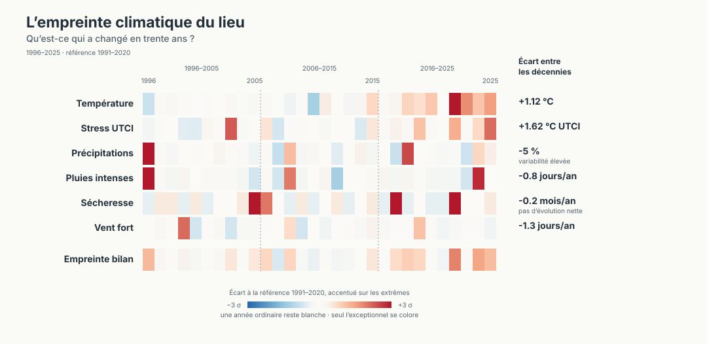
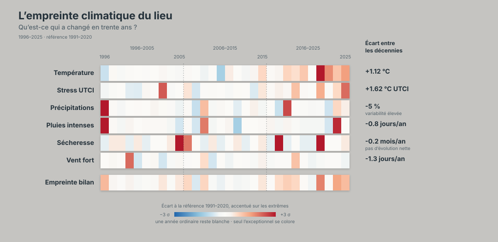
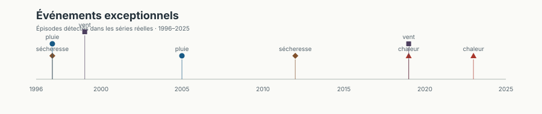

L’empreinte climatique du lieu
Données réelles de réanalyse CDS. Point demandé : 44,064654 N, 3,682935 E. Les mailles climatiques utilisées sont documentées dans le JSON ; elles ne représentent pas une mesure à l’échelle de 100 m.
Le signal le plus net est thermique ; les précipitations annuelles restent très variables.

climate-fingerprint-v4.json.
Comment lire l’empreinte
Chaque case représente une année, et chaque ligne se lit d’un trait : les trente années sont jointives, deux filets pointillés marquant seulement le passage d’une décennie à l’autre.
La couleur mesure l’écart de l’année au climat de référence 1991–2020, exprimé en écarts-types robustes (σ, estimé sur l’intervalle P10–P90). Le gradient a toujours le même sens : bleu = moins, blanc = ordinaire, rouge = plus.
L’échelle est volontairement accentuée sur les extrêmes : un écart de 1 σ, qui survient environ une année sur six, reste blanc ; 2 σ se voit nettement ; 3 σ sature la palette. Une année ne se colore donc que si elle est réellement exceptionnelle, pas parce qu’elle se situe du bon côté de la médiane.
Cet écart mesuré remplace le rang : avec un percentile, toute année dépassant le record 1991–2020 valait P100, et deux records d’intensité très différente sortaient de la même couleur.
Empreinte bilan : moyenne signée des écarts accentués des indicateurs disponibles pour l’année. Les indicateurs exceptionnellement bas tirent vers le bleu, les hauts vers le rouge, et une année ordinaire reste blanche. Un excès et un déficit simultanés peuvent donc se compenser : l’infobulle publie séparément le nombre d’indicateurs exceptionnellement hauts et bas pour rendre cette compensation lisible.
Le gradient reprend la convention des Climate Stripes de l’Université de Reading et s’appuie sur la palette divergente ColorBrewer RdBu, avec une zone claire élargie autour de la normale.
- Température : rouge = plus chaud
- Stress UTCI : rouge = plus de stress thermique
- Précipitations : rouge = plus de précipitations
- Pluies intenses : rouge = plus fréquentes
- Sécheresse : rouge = plus de sécheresse
- Vent fort : rouge = plus de jours de vent fort
Événements exceptionnels
